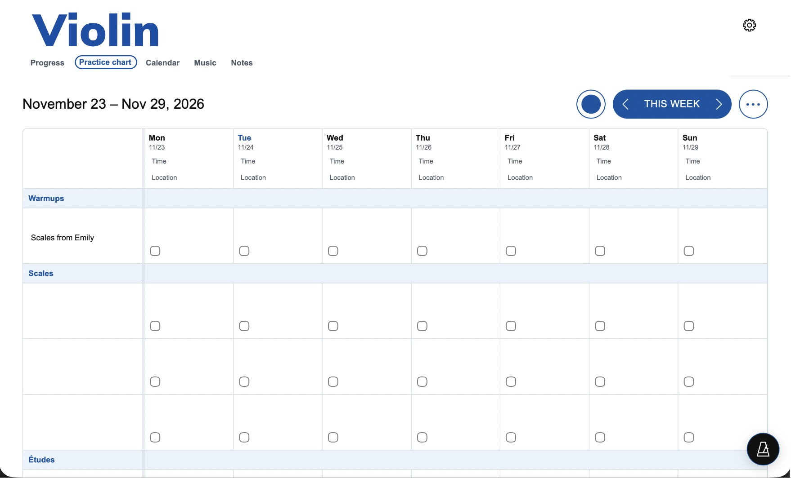
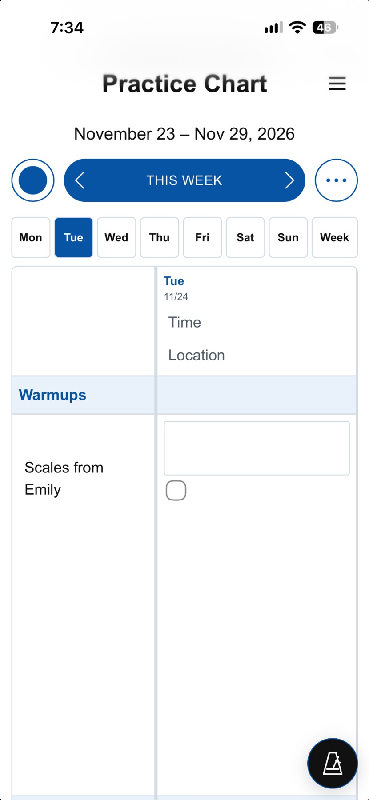

The practice workspace
Every note counts.
Plan your week. Focus on what matters.


Bring your practice, sheet music and musical progress together in one beautifully organized workspace.
Get started How to install ›Plan your week. Focus on what matters.


Take your practice workspace with you, on the devices you already own.
Open Practice Chart